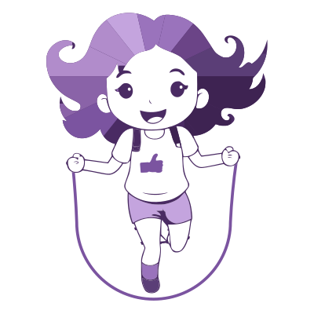
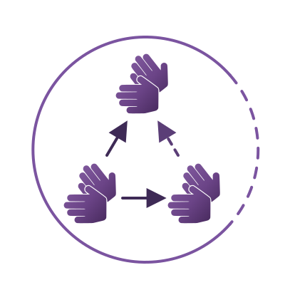

Webphone SIP conversation totale. Layout hérité d'Elioz Connect, palette FSL,
logique FSL + JsSIP. Ces maquettes reflètent l'application telle qu'elle est écrite
(phases 0 à 3) : elles chargent src/ui/theme.css et recopient le balisage
de src/ui/screens/. Seuls le tchat et le DTMF restent marqués « phase 4 ».


Powered by FSL« Utiliser le compte » (et le rappel du compte) n'apparaît que si une
configuration est déjà stockée ; sinon « Configurer un nouveau compte » devient le bouton
principal. L'icône définitive accompagne un titre en texte : le mot-marque de
trix-logo.svg est peint en violet foncé et deviendrait illisible en thème
sombre, qu'aucune règle CSS ne peut atteindre à l'intérieur d'une image. Le crédit
« Powered by FSL » renvoie au framework d'orchestration. Dans l'application les images
viennent de /trix-icon.svg et /fsl-icon.svg ; la maquette les cite
en chemin relatif pour rester ouvrable hors serveur.
Le compte est décrit par une adresse SIP unique (utilisateur + domaine) et non par deux champs séparés. L'identifiant d'authentification n'est saisissable qu'une fois coché ; la mention « si différent de … » suit l'adresse en cours de frappe. Deux colonnes — la coupure sépare ce qui appartient au compte (chiffré, appliqué à la validation) de ce qui appartient au navigateur (immédiat) ; le flash visuel fait exception : il est du côté « alertes » mais reste enregistré avec le compte, et l'aide du champ le dit. Une seule colonne en dessous de 800 px. En cas d'échec d'enregistrement, le formulaire revient avec une bannière d'erreur, le code SIP en petit, et le champ fautif surligné.
État ready. Le bouton d'appel est scindé : le menu (ouvert ici
pour illustration) choisit le mode — le mode retenu est mémorisé et rebaptise le bouton
principal (« Appeler en audio » / « Appeler en vidéo ») ; l'appel ne part que par le bouton.
Les commandes média n'existent plus ici : elles ne s'affichent qu'en appel, posées sur la
scène vidéo (écran 4).
L'historique (chiffré, par compte) tient la place du tchat de la maquette phase 0 : un clic
sur une ligne rappelle le correspondant. Le pied ne garde que la taille du texte — le seul
réglage qu'on ajuste en cours de conversation ; notifications et thème ont rejoint les
paramètres. Le chrono a quitté la sidebar pour la barre d'en-tête, où il n'apparaît qu'en
communication (écran 4).
État in_call / connected. Le bouton d'appel devient Raccrocher,
l'adresse est figée, le chrono tourne. Les vu-mètres (distant / local, WebAudio) courent sur
toute la hauteur de la scène ; quand le correspondant parle, le bouton haut-parleur s'allume
en vert — indice visuel de son entrant, utile quand on ne l'entend pas. Les commandes média
sont en surimpression sur la scène, dans la même barre que la vue mobile. Règle d'état :
rouge + icône barrée quand un flux est coupé (micro, caméra, son) — quelque chose ne
passe plus, le correspondant s'en aperçoit ; violet pour une bascule purement locale
(self-view masqué). L'icône barrée et aria-pressed portent l'état à eux seuls :
la couleur ne fait que le confirmer. Ici le micro est coupé. Le bouton « Plein écran »
double le double-clic, qui n'existait pas au clavier. En fin de barre, le bouton de repli
du panneau (aria-expanded) ; la poignée du bord gauche du panneau le
redimensionne à la souris comme aux flèches du clavier, entre 300 px et le tiers de la fenêtre.
Paramètres et Déconnexion restent désactivés
pendant l'appel. Avant décrochage (dialing / ringing), la scène
affiche « Appel en cours… » / « Sonnerie… » et l'adresse appelée, à la place des vu-mètres.
Même état, panneau replié — la scène occupe toute la largeur. Le bouton de
repli passe en violet et son intitulé annonce ce qu'il fera : « Afficher le tchat »
(l'historique, lui, reste réservé au hors-appel — la place manque à 300 px). Le panneau replié,
Raccrocher reparaît en rond rouge 56 px à droite de la barre : la règle est qu'il doit
rester atteignable dans tous les états, et c'est elle qui justifie ce second bouton. Le repli
et la largeur sont retenus (localStorage) et survivent au rechargement ; ils ne
passent par aucune machine à états — le format d'affichage ne change rien au protocole SIP.
État in_call / ringing_in (phase 3). L'appel entrant s'annonce
en popup modale (role="dialog" aria-modal="true") : le focus y entre à
l'ouverture et y reste piégé, Échap refuse l'appel, et le reste de l'écran passe
inert — répondre ou refuser sont les deux seules choses à faire. Le voile ne
ferme pas au clic : une erreur de clic ne doit pas raccrocher. Le cadre qui clignote sur
tout le pourtour est l'alerte accessible aux personnes sourdes : cadence < 1 Hz,
pas de rouge saturé (WCAG 2.3.1), non cliquable — les boutons restent accessibles à travers.
Elle s'accompagne du titre d'onglet et du favicon clignotants, d'une notification système,
d'une vibration et d'un maintien de l'écran allumé ; seul le flash est débrayable, dans la
configuration du compte. Les réponses proposées découlent des seuls médias offerts par
l'INVITE : une offre audio pure ne montrerait que « Répondre en audio ». Un second appel
pendant celui-ci est refusé automatiquement (486 Busy Here).
État reg_failed. Le diagnostic est en clair (une phrase par cause :
identifiants, serveur injoignable, TLS…) et la cause SIP brute reste lisible et sélectionnable
en dessous, pour un rapport de bug. L'état reconnecting reprend la même
disposition avec « Nouvelle tentative de connexion dans 10 s… » et « Réessayer maintenant » ;
l'état sleeping (veille de la machine) affiche « Veille — l'enregistrement
reprendra au réveil ». Historique vide : « Aucun appel enregistré ».
Vue mobile (< 720 px de large, ou ?layout=mobile).
Le basculement mobile ⇄ bureau est un simple re-rendu : ni l'appel ni l'enregistrement ne
sont coupés, et la machine à états reste unique. Hors appel : état en pastille + libellé,
champ d'adresse, bouton d'appel scindé, historique. Ni vidéo ni commandes média — elles
n'apparaissent qu'en appel. Pas de pied de préférences ici : la taille du texte se règle
depuis la vue bureau, le thème et les notifications depuis les paramètres.
En appel, l'adresse et l'historique disparaissent : la vidéo prend tout
l'écran, le chrono est incrusté en haut à gauche, le self-view en haut à droite (portrait),
les commandes média sont en surimpression au bas de l'image et le raccrochage est le bouton
rond rouge à leur droite. Les zones basses et latérales respectent les encoches
(env(safe-area-inset-*)). Ici le self-view est masqué (bouton violet) et le
correspondant parle (haut-parleur vert).
Appel entrant sur mobile : la même popup modale que sur bureau, la
carte élargie à la fenêtre — un seul module (call/incoming.ts) sert les deux
formats. Cet écran montre le cas de l'offre sans vidéo : une seule réponse est
proposée, et le sur-titre dit laquelle. Sur mobile s'ajoutent la vibration et le
wake lock — un écran éteint ne flashe pas.